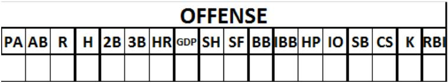

Offense information .

| PA |
Number of times of a player’s Plate Appearances. |
| AB |
Number of times At Bat. |
| H |
Total number of hits. ATTENTION : this means all safe hits, not just singles. |
| 2B |
Number of two-base hits (doubles). |
| 3B |
Number of three-base hits (triples). |
| HR |
Number of four-base hits (Home Runs). |
| GDP |
Number of balls Grounded into Double Play |
| SH |
Number of balls Grounded into Double Play |
| SF |
Number of sacrifice flies |
| BB |
Total number of Bases on Balls (including Intentional Bases on Balls) |
| IBB |
Total number of Intentional Bases on Balls. |
| HP |
Number of times the batter is hit by the pitched ball. |
| IO |
Number of times the batter reached first base on I nterference or Obstruction. |
| SB |
Number of Stolen Bases. |
| CS |
Number of times the runner was Caught Stealing. |
| K |
Number of strikeouts. |
| RBI |
Number of Runs Batted In. |
GENERAL NOTE: The above performance statistics are marked on the line next to the name of the player concerned.
Specifically, if a player has played in two fielding positions and is replaced by another player who goes to bat, the batting statistics for the new player should be recorded on the third line of the offense section, next to the name of the new player.